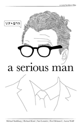
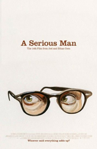
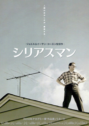

Yelena Shmulenson
Michael Stuhlbarg
Sari Lennick
Richard Kind
Aaron Wolff
Jessica McManus
Fred Melamed
Steve Park
Jane Hammill
Ari Hoptman
Katherine Borowitz
Peter Breitmayer
Simon Helberg
Adam Arkin
Michael Lerner
George Wyner
Amy Landecker
Claudia Wilkens
Alan Mandell
Roger Deakins
Bloomington, Minnesota, 1967 - Jewish physics lecturer Larry Gopnik is a serious and a very put-upon man. His daughter is stealing from him to save up for a nose job, his pot-head son, who gets stoned at his own bar-mitzvah, only wants him round to fix the TV aerial and his useless brother Arthur is an unwelcome house guest. But both Arthur and Larry get turfed out into a motel when Larry's wife Judy, who wants a divorce, moves her lover, Sy, into the house and even after Sy's death in a car crash they are still in the motel. With lawyers' bills mounting for his divorce, Arthur's criminal court appearances and a land feud with a neighbour, Larry is tempted to take the bribe offered by a student to give him an illegal exam pass mark. And the rabbis he visits for advice only dole out platitudes. Still God moves in mysterious - and not always pleasant - ways, as Larry and his family will find out.
Considerable attention was paid to the setting; it was important to the Coens to find a neighbourhood of original-looking suburban rambler homes as they would have appeared in St. Louis Park, Minnesota, in the late 1960s. Locations were scouted in nearby Edina, Richfield, Brooklyn Center and Hopkins before a suitable location was found in Bloomington. The film's look is partly based on the Brad Zellar book Suburban World: The Norling Photographs, a collection of photographs of Bloomington in the 1950s and 60s. Location filming began on 8 September 2008, in Minnesota.
Filming wrapped on 6 November 2008, after 44 days, ahead of schedule and within budget. Longtime collaborator Roger Deakins rejoined the Coens as cinematographer, following his absence from Burn After Reading. This was his tenth film with them. Costume designer Mary Zophres returned for her ninth collaboration with the directors.
The Coens themselves stated that the "germ" of the story was a rabbi from their adolescence: a "mysterious figure" who had a private conversation with each student at the conclusion of their religious education. Ethan Coen said that it seemed appropriate to open the film with a Yiddish folk tale, but as the brothers did not know any suitable ones, they wrote their own.
At the end of the credits is a line advising that "No Jews were harmed in the making of this motion picture".


